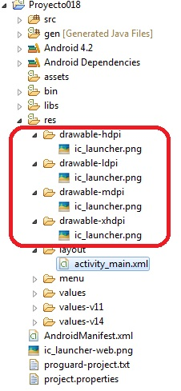
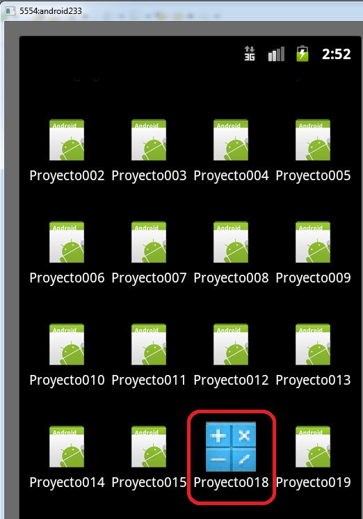

21 - Icono de la aplicaciónYa se encuentra disponible el nuevo tutorial para aprender android con el nuevo entorno Android Studio propuesto por Google y que remplaza a Eclipse. |
Cuando creamos un proyecto para implementar una aplicación con el plugin de Android nos crea un ícono por defecto:
Los íconos e imágenes se almacenan en la carpeta res (resources) y en esta hay cuatro carpetas llamadas:
drawable-ldpi drawable-mdpi drawable-hdpi drawable-xhdpi
Y en cada una de estas hay un archivo llamado ic_launcher.png:
Como las resoluciones de los dispositivos Android pueden ser muy distintos (un celular, una tablet, un televisor etc.) se recomienda proporcionar múltiples copias de cada imagen de recursos a diferentes resoluciones y almacenarlos en las carpetas nombradas respetando las siguientes reglas:
res/drawable-ldpi/
75% del tamaño de las imágenes almacenadas en la carpeta drawable-mdpi
El ícono debe ser de 36*36 píxeles.
res/drawable-mdpi/
El ícono debe ser de 48*48 píxeles.
res/drawable-hdpi/
150% del tamaño de las imágenes almacenadas en la carpeta drawable-mdpi
El ícono debe ser de 72*72 píxeles.
res/drawable-xhdpi/
200% del tamaño de las imágenes almacenadas en la carpeta drawable-mdpi
El ícono debe ser de 96*96 píxeles.
Crear una aplicación, dibujar y almacenar tres archivos llamados icon.png. Tener en cuenta que el archivo que se almacena en la carpeta drawable-mdpi debe ser de 48 píxeles, el de la carpeta drawable-mdpi de 36 píxeles y el de la carpeta drawable-hdpi debe ser de 72 píxeles de ancho y alto. Ejecutar la aplicación y ver el ícono nuevo.
Este proyecto lo puede descargar en un zip desde este enlace: proyecto018.zip